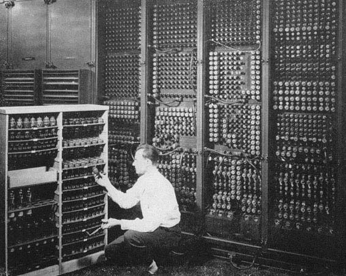

Kalkulátor szó eredete: római calculus szóból, jelentése kavics
X-XII. század: tízes alapú számrendszer
XVI. század: táblázatok készítése
Jost Bürgi 1603 és 1611 között megalkotta az első logaritmustáblázatot
XVII. század: logarléc megjelenése(1632.)
Wilhelm Schikard: első mechanikus számológép, mely már tudta a négy alapműveletet(1623)
Blaise Pascal(XVII. század): 10-es számrendszert használó mechanikus számológép, csak összeadni
és kivonni tudott
Gottfried Wilhelm Leibniz: Pascal gépét továbbfejlesztette, már szorozni és osztani is tudott. Ötlete:
a számológépek kettes számrendszert használjanak
Charles Babbage: gépe nem készült el, de tervében szereplő részletek már hasonlítottak a mai
számológépekre, lyukkártyával működött volna
Joseph Marie Jacquard: lyukkártyával működő szövőgép
Hermann Hollerith: Kártyaosztályozó gépével népszámlálás az USA-ban (1890). Majd 1911-ben
létrehozta a világ első számítás-technikai társaságát Computing Tabulating Company, melynek
1924-től a neve: International Business Machine (IBM)
Howard Aiken: folytatja Holerith munkáját, 1944-ben MARK I. (15*3 méteres, 35 tonna)
elektromechanikus számológép
Kb. 300 művelet/s
Adathordozók lyukkártya és lyukszalag
1. generáció (1946 és az 1950-es évek)
ENIAC(1946)
hivatalosan az első programozható, elektronikus, digitális számítógép volt.
18 ezer elektroncsövet építettek bele
lyukkártyás
decimális számokkal dolgozott
órajel: 100kHz (5000össezadás/s)
2.5 m magas és 40 m hosszú
EDVAC(1944-1952)
Neumann-elv alapján készült
UNIVAC
első sorozatban gyártott gép
Megjelennek magas szintű nyelvek ( + gépi kód)

Fortran
Algol
Lassú perifériák, nagy helyigény, gyakori hibák
Operatív tar: akusztikus, CRT, mágnesdob
Háttértár: mágnesszalag, mágnesdob
Adatbevitel: lyukszalag, lyukkártya
Adatkivitel: lyukkártya, nyomtatott lista
Méret: szobányi
2. generáció (1959 - 1964)
Tranzisztorok (1948) és diódák alkalmazása
Kis méret, nagy megbízhatóság, kisebb energiaigény
Nagy műveleti sebesség - kb. 100 000 összeadás/s
Operációs rendszerek
Magas szintű nyelvek elterjedése (Algon, Fortain, Cobol)
Operatív tár: ferritgyűrű
Háttértár: mágnesszalag az általános, megjelenik a mágneslemez
Adatbevitel: lyukkártya, mágnesszalag
Adatkivitel: lyukkártya, nyomtatott lista
Méret: szekrény
3. generáció (1964 - 1972)
Intergrált áromkörök (IC) a gépekben
Gépek mérete és ára jelentősen csökkent
500 000 összeadás/s
Mágneses háttértárak (10 - 30MB)
Nagy kapacitású és gyors perifériák, nyomtatók, rajzgépek, monitor
Több felhasználót kiszolgáló operációs rendszerek
Számítógépek széles körű alkalmazása
Basic (Kemény János és Tom Kurtz), Pascal, C megjelenése